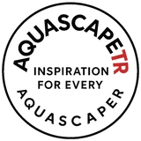

AquascapeTR
Akvaryum Otomatik Gübre Dozaj Sistemi
4 kanal, haftalık program, ml hassasiyeti, kalibrasyon sihirbazı ve şişe takibi. Home Assistant gerekmez.
1. Yazılımı karta yükle
- ESP32 kartını veri aktarabilen bir USB kablosuyla bilgisayara tak. (Bazı şarj kabloları veri taşımaz.)
- Aşağıdaki butona bas, açılan pencerede kartın portunu seç ve Install de. Kart türü (ESP32 / ESP32-S3) otomatik tanınır. “Erase / Cihazı sil” seçeneğini işaretlemene gerek yok.
- Yükleme bitince Next'e bas: sayfa Wi-Fi ağını ve şifresini sorar. Gir, kaydet — Wi-Fi kurulumu bu kadar.
Port listede görünmüyorsa: kablonuzu değiştirin veya kartınızdaki USB çipinin sürücüsünü kurun (CP210x ya da CH340).
“Failed to initialize / connect” hatasında: karttaki BOOT butonuna basılı tutarken Install'a basın, yükleme başlayınca bırakın.
“Failed to initialize / connect” hatasında: karttaki BOOT butonuna basılı tutarken Install'a basın, yükleme başlayınca bırakın.
2. Kartı bağla
- Güç: 12V adaptörü 12V→5V USB dönüştürücüye bağla, dönüştürücünün USB kablosunu ESP32'ye tak.
- Röle modülü: üzerindeki
JD-VCCjumper'ını çıkar. Sonra:VCC → 3V3,JD-VCC → 5V,GND → GND,IN1 → GPIO18,IN2 → GPIO17,IN3 → GPIO16,IN4 → GPIO4. - Pompalar: 12V (+) her rölenin
COMucuna; röleninNOucu pompanın (+) ucuna; pompanın (−) ucu adaptörün (−) ucuna. - Her pompanın uçlarına bir diyot (1N4007 / 1N5819) bağla: çizgili uç (+) tarafa.
Ayrıntılı şema: Bağlantı şeması
3. Kontrol paneli
- Telefon veya bilgisayar ev Wi-Fi'ına bağlıyken: aquascapetr.local
- Açılmazsa modem arayüzünde aquascapetr cihazının IP adresine bak ve onu yaz.
- Wi-Fi'ı 1. adımda ayarlamadıysan: kart “AquascapeTR Kurulum” adlı bir ağ yayınlar. Telefonla bağlan (şifre
dozaj1234), ev ağını seç.
4. Kalibrasyon ve ayarlar
- Pompa kartına dokun → Kalibrasyon sihirbazını aç. Hortum ucunu boş bir ölçü kabına koy, Başlata bas (30 sn).
- Biriken miktarı gir ve Kaydet. Akış hızı otomatik hesaplanır.
- Pompaya bir ad ver (örn. “Azot”). Program bölümünde dozlama günlerini seç, doz saatlerini ve miktarlarını ekle (günde 6'ya kadar), Programı kaydet ve Otomatiki aç.
- Şişeyi doldurduğunda “Şişeyi doldurdum”a bas; kalan miktar her dozda otomatik düşer.
Güncelleme
Yeni sürümü yüklemek için iki yol var: kartı bilgisayara takıp yukarıdaki butonu tekrar kullan (ayarlar korunur), ya da kablosuz: güncelleme dosyasını indir (ESP32 / ESP32-S3) ve kontrol panelinde Ayarlar → Yazılım güncelle bölümünden yükle.